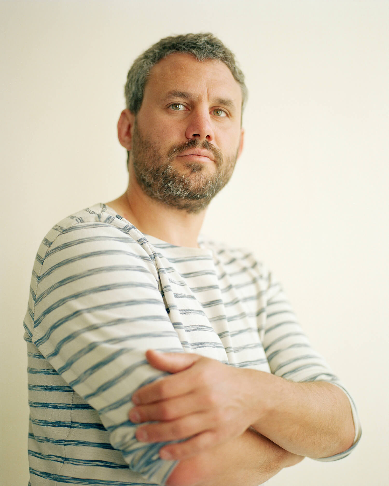

À propos
Né en 1985, vit entre Amiens et la Lozère.
Lorsque je suis devenu photographe, je disais que je travaillais sur un sujet ; sur les touristes dans les belvédères, sur les ouvriers de l’usine Goodyear. Pourtant, quelque chose n’allait pas, un grain de sable, une gêne. Pendant l’écriture de Je n’habitais pas mon visage, je compris : je ne voulais pas travailler sur, mais avec. La différence des deux approches m’a libéré, m’a ouvert de nouvelles questions, des horizons jusqu’alors bouchés par une idée trop verticale de ma place.
Tous les travaux que je mène depuis prennent racines dans les rencontres humaines, avec l’idée que l’art est une manière de prendre soin de l’autre. Travailler avec celles et ceux qui n’ont pas accès à la création ou à la culture, et penser ensemble des images commes des amulettes, dans lesquelles se raconter. Ces travaux se situent toujours sur un fil ténu, au carrefour du désir de chacun.
Accepter cette posture en équilibre permet la naissance d’œuvres justes, dépositaires d’histoires et d’émotions.
Je n’habitais pas mon visage est le premier projet du faire-avec. Suite à ce projet créé avec des personnes dont le visage a disparu - j’ai travaillé autour de la peau avec des personnes enfermées dans La part du feu. Ces deux travaux parlent du corps empêché de devenir un outil de rencontre d’autrui et du monde, et les images produites tentent de faire ressentir et de déjouer les limites. Un troisième projet autour du corps en est à ses prémices : L’eau qui dort. C’est un travail à partir des postures imposées, subies consciemment ou non. Comment le corps ploie-t-il sous les contraintes ? Quelles traces laissent-elles ? Et, surtout, le corps peut-il reprendre possession de sa liberté, peut-il se déplier ?
Saints-Loups s’inscrit dans les mêmes questions, en représentant un quartier avec les personnes photographiées, en créant les images ensemble à partir des histoires de toutes et tous.
Les projets crées en duo avec Perrine Le Querrec, écrivaine, - sous le nom de PLY - témoignent eux aussi d’une nécessité de créer en collectif, loin de l’image de l’artiste solitaire. Que ce soit par la création en duo, ou par l’échange avec des images d’archives, des textes, les travaux que nous créons avec PLY se veulent résolument tournés vers l’altérité.
Nous travaillons cette année avec des femmes violentes, pour Les Amazones n’existent pas. Ce projet, lauréat de la grande commande de la BnF, vise à créer une représentation visuelle des femmes violentes : gilets jaunes, boxeuses, policères, délinquantes, prisonnières, black-blocs. En effet, lorsque qu’est évoquée la violence des femmes, elle est considérée comme un terrible avertissement de l’ensauvagement de la société ; un tabou, symbole de la « panique morale » qui guetterait notre société. Pourtant, les études historiques le montrent, la violence des femmes a toujours existé. Dès lors, qu’est-ce qu’il se joue dans son invisibilisation, dans sa redécouverte constante ?
Depuis plusieurs années je travaille avec d’autres, sur le long terme ou le plus court, qu’ils soient co-artistes engagés avec moi, écrivaine, mais aussi avec un prothésiste, un créateur sonore, des gardiens de prison, une psychiatre, un potier.
Cette pluralité de vues est nécessaire à l’émergence d’une parole juste, par la compréhension d’autres langages, la complémentarité d’autres visions.
